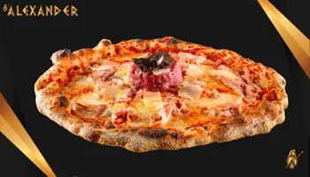
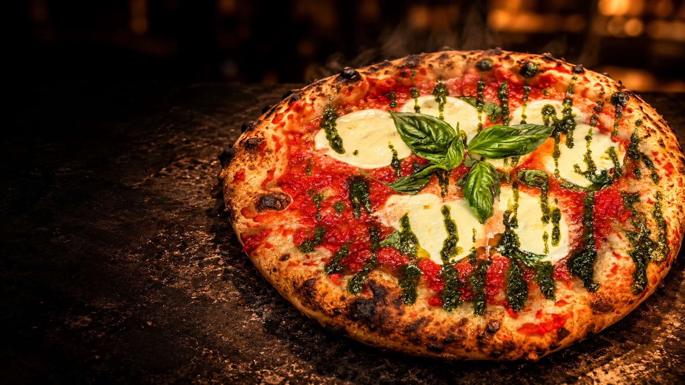
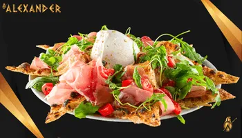
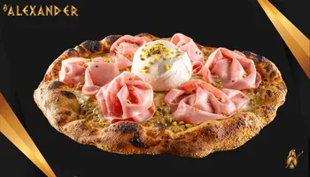
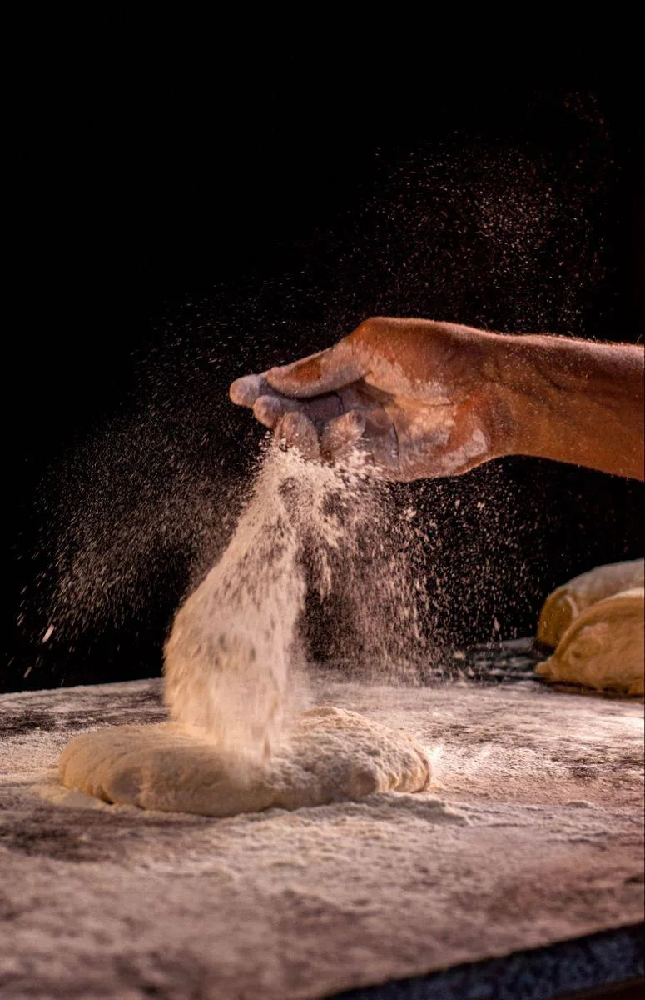
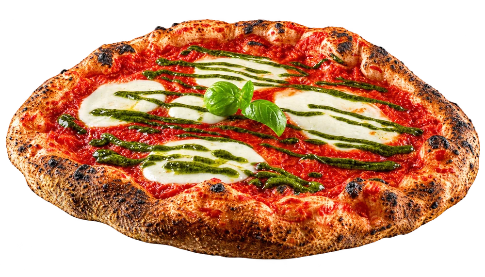
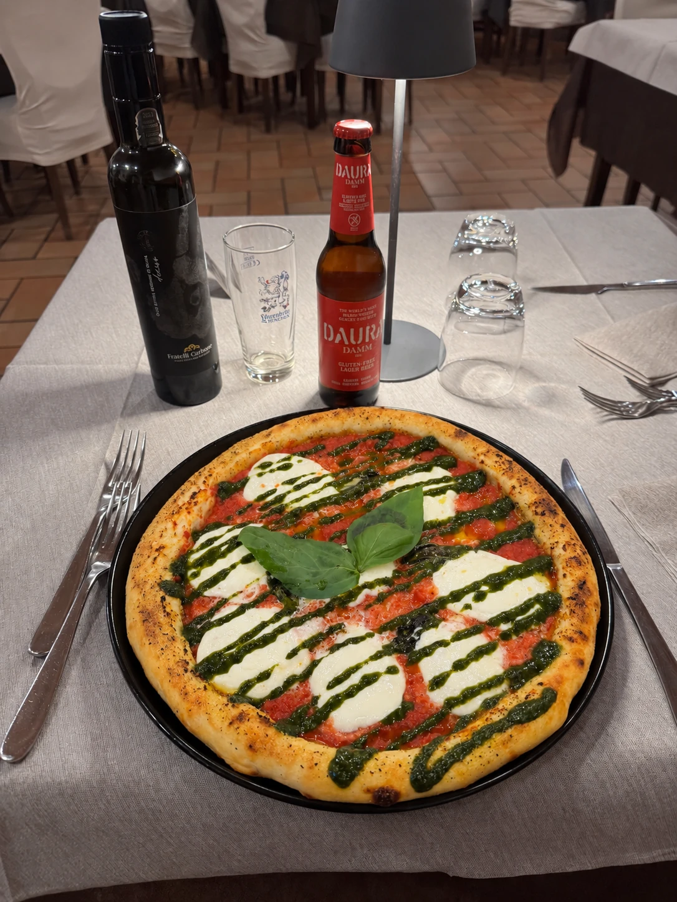

Alexander
Battuta di fassone piemontese, prosciutto cotto, fontina e olio al tartufo.

Pizza artigianale dal 2009
48 ore di lievitazione. Quattro pizzerie in Piemonte.
Una sola filosofia: pizza da ricordare.
Il segreto è nell’impasto.
Scegli la tua pizzeria e prenota in pochi secondi.
Pizze dal carattere deciso.
Trova quella che ti somiglia.

Battuta di fassone piemontese, prosciutto cotto, fontina e olio al tartufo.

Burrata, prosciutto crudo, rucola e pomodorini.

Crema di pistacchi di Bronte, mortadella IGP e burrata pugliese.
Pomodoro, bufala campana DOP e crema al basilico.

Si parte dalla biga. Si lascia riposare per 48 ore.
Si stende a mano, una pizza alla volta.
Aura, la nostra Margherita
Tre ingredienti, tutto il carattere.
Tocca i punti e scopri cosa c’è sopra.

Il latte, la morbidezza e il contrasto con il pomodoro.
Aura, la nostra Margherita
Il piacere di stare a tavola
Il nostro impasto senza glutine lo prepariamo in casa.
Riconosciuti AIC in tutte le sedi.
Le vostre parole su Google
Una selezione di recensioni da 4 e 5 stelle, una per sede.
Scopri tutte le opinioni direttamente su Google.
Piossasco
«Mi sono recato in questa pizzeria per Cenare ed ero curioso di provare il loro tipo di Impasto a Base di Farina Di Mais. Ho Scelto un Gusto non Troppo Importante a livello di Sapori. La Pizza è risultata Buona,Particolare,croccante e calda al Punto giusto. Tutto Lo Staff è risultato Gentile,Disponibile,Professionale.. Ci Tornerò data la Vastità di Idee nel Menù sia inerente alle Pizze che ad altre specialità ..»Leggi su Google →
Pinerolo
«Pizzeria di ottimo livello, con un impasto leggero, ben lievitato e digeribile. Gli ingredienti utilizzati sono di eccellente qualità e si percepisce grande attenzione nella scelta delle materie prime. Pizza gustosa, equilibrata e preparata con cura. Servizio cordiale e ambiente piacevole. Prezzo nella media. Consigliata»Leggi su Google →
Giaveno (Valsangone)
«Sono riusciti a fare un'ottima pizza di sabato sera con forte presenza di clientela. La pizza era perfetta non bruciata ingredienti di qualità e bilanciati. Ottime le birre e i vini. Personale giovane efficiente brave tutte le cameriere.»Leggi su Google →
Rivoli
«Cibo delizioso e camerieri molto gentili Gli antipasti sono la cosa più deliziosa Ve lo consiglio veramente»Leggi su Google →
Scorri per leggere le altre recensioni →
Valutazioni Google rilevate il 21 ottobre 2026.
Il tuo tavolo, la tua pizza, il tuo Alexander.